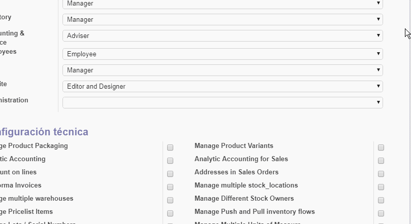
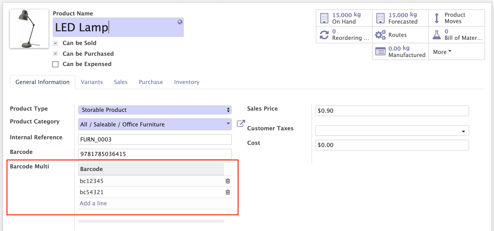
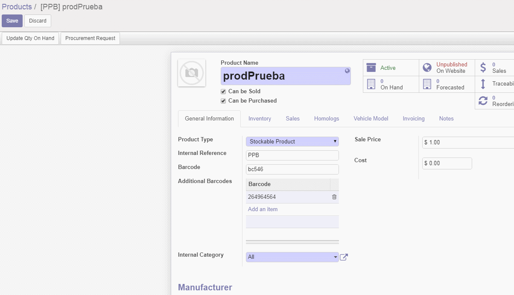
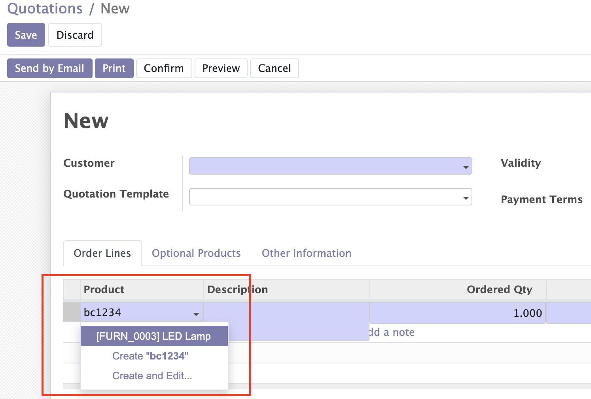

<section class="oe_container">
    <div class="oe_row">
        <div class="oe_span12">
            <h2 class="oe_slogan"> How To use Product Multiple Barcodes</h2>
        </div>
        <div class="oe_span12" style="text-align: center; margin-bottom: 5px">
            <p style="padding: 5px; font-size: 16px; font-weight: bold; background-color: yellow; display: inline">
                To edit the BarcodeList of Any Product, you need to enable the MANAGE PRODUCT VARIANTS permission on the user.
            </p>
        </div>
        <div class="oe_span12">
            <div class="oe_row_img oe_centered">
                
                <p style="margin-left: 10%; font-size: 14px; font-weight: bold; background-color: yellow;">
                If your products have multiple barcodes on the package you can add them into Odoo using this module.
                </p>
                
                <p style="margin-left: 10%; font-size: 14px; font-weight: bold; background-color: yellow;">
                Don't worry about barcode duplication, every barcode is unique ...
                </p>
                
                <p style="margin-left: 10%; font-size: 14px; font-weight: bold; background-color: yellow;">
                Then you will be able to find such products by these barcodes as in web Odoo...
                </p>
                
            </div>
        </div>
    </div>
</section>
